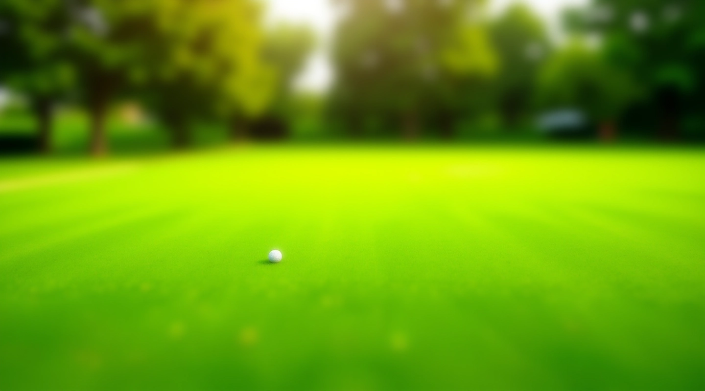
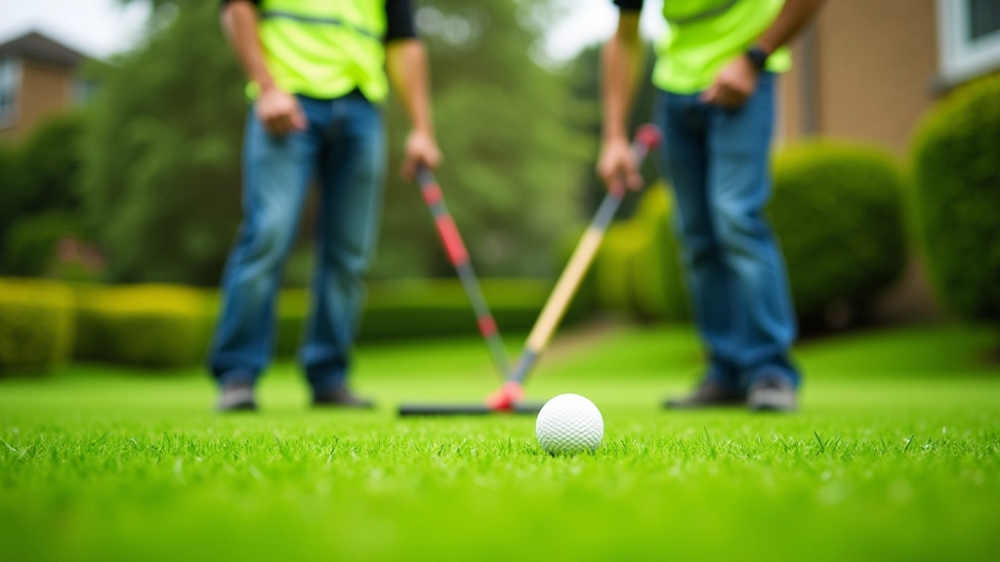

تحليل التربة وتجهيزها
ما الذي نقيسه في العينة، وكيف تترجم النتائج إلى قرارات عملية في التسوية والتصريف.
اقرأ المقال ←السطح الأخضر المستوي الذي يعجبك ليس نتيجة جزّ منتظم فقط، بل نتيجة تربة مُحلَّلة، تسوية دقيقة، عشب مناسب للمناخ، ونظام ري مصمم لهذا الملعب تحديداً. نحن نتولى هذه الطبقات كلها منذ 2021.

أربعة مجالات نغطيها من التصميم الأولي إلى الصيانة المستمرة، ويمكن طلب أي منها منفرداً.
فحص التركيب والحموضة والتصريف قبل أي عمل، لأن التربة الخاطئة تُفشل أفضل بذرة وأفضل نظام ري.
انتقاء الصنف المناسب لمناخ المنطقة ومستوى الاستخدام، ثم البذر أو الفرش بالطريقة الأنسب للموقع.
توزيع الرشاشات وحساب الضغط والزمن بحيث يصل الماء بالتساوي دون مناطق غارقة أو جافة.
خطة سنوية واضحة: الجزّ، التهوية، التسميد، وترميم البقع الضعيفة في التوقيت الصحيح لكل موسم.

الملاعب العشبية مشاريع طويلة الأمد. القرارات التي تبدو موفّرة في الشهر الأول تظهر تكلفتها في السنة الثانية، لذلك نلتزم بأربعة مبادئ.
أي مشروع يبدأ بفحص التربة والتصريف. البناء على معلومات ناقصة يعني إعادة العمل لاحقاً.
نعرض الخيار الأوفر والخيار الأمتن ونذكر ما يخسره كل منهما، ثم القرار قرارك.
الأصناف والجداول التي تنجح في مناخ معتدل قد تفشل في صيف الجيزة. نختار على أساس الواقع لا الكتالوج.
نسلّم الملعب مع تدريب عملي على الصيانة اليومية، لأن أفضل تجهيز يتدهور بلا متابعة صحيحة.
أربع مراحل واضحة من أول زيارة حتى التسليم والمتابعة.
زيارة الموقع، أخذ عينات التربة، وقياس الميول والتصريف الطبيعي قبل وضع أي تصور.
خطة الطبقات ونظام الري، ثم التسوية بالليزر للوصول إلى سطح ضمن هامش الملاعب المعتمد.
البذر أو الفرش، ثم فترة تأسيس مُراقَبة بجدول ري وتسميد يومي حتى ثبات الغطاء الأخضر.
تسليم مع دليل صيانة مكتوب وتدريب للفريق، إضافة إلى زيارات متابعة على مدار السنة الأولى.
مقالات تفصيلية تشرح ما نفعله في كل مرحلة، لمن يريد أن يفهم أو يتولى العمل بنفسه.

ما الذي نقيسه في العينة، وكيف تترجم النتائج إلى قرارات عملية في التسوية والتصريف.
اقرأ المقال ←
الفروق العملية بين الأصناف الشائعة، ومتى يكون الفرش أفضل من البذر والعكس.
اقرأ المقال ←
توزيع الرشاشات، حساب الضغط، وضبط أزمنة التشغيل لتفادي التشبع والجفاف معاً.
اقرأ المقال ←أرسل لنا مساحة الموقع وحالته الحالية وصوراً إن أمكن، وسنرد بتقييم أولي وخطوات مقترحة قبل أي التزام.
اطلب استشارة مجانية